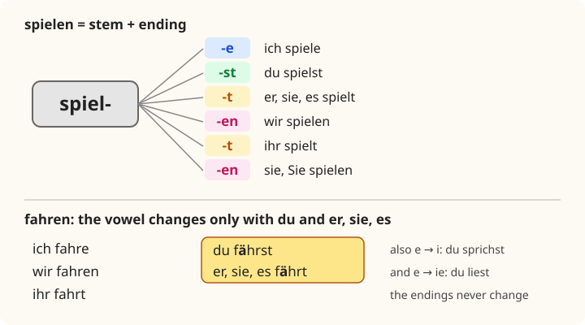

Lesson 6: The Present Tense¶
Das Präsens
The present tense is the workhorse of German. It covers what English says with three different forms, I play, I am playing and I do play, and it is also the normal way to talk about the future: Morgen fahre ich nach Dresden, "Tomorrow I'm going to Dresden". You already know the regular endings from Lesson 2. In this lesson you learn to use them with any regular verb, including those whose stems need a small adjustment, and you meet the verbs that change their vowel in the du and er forms: fahren, du fährst; sprechen, du sprichst; lesen, du liest. You also learn to say what you like doing with the little word gern.
Learning outcomes
By the end of this lesson you will be able to:
- form the present of any regular verb, including verbs like arbeiten, reisen and wandern;
- form the present of the verbs that change their stem vowel: a → ä, e → i, e → ie;
- use the irregular verbs wissen and werden in the present;
- use the present for the present, the future and actions that began in the past (seit);
- say what you like and do not like doing with gern, nicht gern, lieber and am liebsten;
- talk about your free time and hobbies.
6.1 Dialogue: free time¶
After class, Emma and Ravi have a coffee together.
- Ravi: Emma, was machst du gern in der Freizeit? — Emma, what do you like doing in your free time?
- Emma: Ich lese gern, und ich höre viel Musik. Und am Wochenende wandere ich gern. Und du? — I like reading, and I listen to a lot of music. And at the weekend I like hiking. And you?
- Ravi: Ich koche gern. Und ich spiele Kricket, aber hier spielt niemand Kricket! — I like cooking. And I play cricket, but nobody plays cricket here!
- Emma: Jonas spielt Fußball. Er trainiert dienstags und donnerstags. — Jonas plays football. He trains on Tuesdays and Thursdays.
- Ravi: Spielt er gut? — Does he play well?
- Emma: Ja, sehr gut. Und samstags arbeitet er im Café. — Yes, very well. And on Saturdays he works in a café.
- Ravi: Wie lange lernst du schon Deutsch? — How long have you been learning German?
- Emma: Seit sechs Monaten. Und du? — For six months. And you?
- Ravi: Seit einem Jahr. Aber ich spreche noch nicht gut. — For a year. But I don't speak well yet.
- Emma: Ach was, du sprichst sehr gut! Liest du auch deutsche Bücher? — Oh, come on, you speak very well! Do you read German books too?
- Ravi: Ja, langsam. Und ich sehe oft deutsche Filme. — Yes, slowly. And I often watch German films.
- Emma: Fährst du morgen auch nach Dresden? Jonas und ich fahren um neun. — Are you going to Dresden tomorrow too? Jonas and I are leaving at nine.
- Ravi: Morgen? Ja, gern! Ich habe Zeit. — Tomorrow? Yes, I'd love to! I'm free.
Notice:
- Ich lese gern means "I like reading": the word gern after the verb says that you enjoy it.
- Some verbs change their vowel with du and er: ich spreche but du sprichst; ich lese but du liest; wir fahren but du fährst.
- Wie lange lernst du schon Deutsch? uses the present, where English uses have been learning.
- Fährst du morgen nach Dresden? is about the future, but the verb is in the present.
6.2 Vocabulary: verbs and free time¶
Regular verbs¶
| German | English | German | English |
|---|---|---|---|
| machen | to do, to make | kaufen | to buy |
| spielen | to play | brauchen | to need |
| hören | to hear, to listen to | suchen | to look for |
| lernen | to learn, to study | fragen | to ask |
| kochen | to cook | sagen | to say |
| trinken | to drink | glauben | to believe, to think |
| gehen | to go (on foot) | bleiben | to stay |
| schwimmen | to swim | schreiben | to write |
| tanzen | to dance | reisen | to travel |
| arbeiten | to work | warten | to wait |
| finden | to find; to think (an opinion) | kosten | to cost |
| wandern | to hike, to walk in the country | studieren | to study (at university) |
| besuchen | to visit | fotografieren | to take photographs |
Table 6.1. Regular verbs. Every one of them takes the endings of section 6.3.
Verbs that change their vowel¶
| German | English | du / er |
|---|---|---|
| fahren | to go (by vehicle), to drive | du fährst, er fährt |
| schlafen | to sleep | du schläfst, er schläft |
| laufen | to run; to walk | du läufst, er läuft |
| tragen | to carry; to wear | du trägst, er trägt |
| waschen | to wash | du wäschst, er wäscht |
| sprechen | to speak | du sprichst, er spricht |
| essen | to eat | du isst, er isst |
| helfen | to help | du hilfst, er hilft |
| geben | to give | du gibst, er gibt |
| nehmen | to take | du nimmst, er nimmt |
| treffen | to meet | du triffst, er trifft |
| lesen | to read | du liest, er liest |
| sehen | to see; to watch (TV) | du siehst, er sieht |
Table 6.2. Verbs with a vowel change in the du and er forms (section 6.4).
Free time¶
| German | English |
|---|---|
| die Freizeit | free time, leisure |
| das Hobby, die Hobbys | the hobby |
| der Sport | sport |
| der Fußball | football |
| die Musik | music |
| der Film, die Filme | the film |
| das Kino | the cinema |
| das Konzert | the concert |
| das Spiel | the game, the match |
| das Fahrrad | the bicycle |
| das Instrument | the musical instrument |
| die Gitarre / das Klavier | the guitar / the piano |
Table 6.3. Free time.
How often?¶
| German | English |
|---|---|
| immer | always |
| oft | often |
| manchmal | sometimes |
| selten | rarely |
| nie | never |
| jeden Tag | every day |
| einmal pro Woche | once a week |
| viel | a lot |
| gern | gladly; with a verb: to like doing |
Table 6.4. Words for frequency.
6.3 Grammar: regular verbs in the present¶
The pattern¶
Every regular verb works like kommen in Lesson 2: take the stem (the infinitive without -en) and add the endings.
| Person | spielen | machen | lernen | Ending |
|---|---|---|---|---|
| ich | spiele | mache | lerne | -e |
| du | spielst | machst | lernst | -st |
| er, sie, es | spielt | macht | lernt | -t |
| wir | spielen | machen | lernen | -en |
| ihr | spielt | macht | lernt | -t |
| sie, Sie | spielen | machen | lernen | -en |
Table 6.5. The regular present. Switch on Practice and write the forms.

Three adjustments to the pattern¶
The endings never change, but three kinds of stem need a small adjustment so that the forms can be pronounced.
1. Stems ending in -t or -d (and a few in -m or -n after another consonant) add an -e- before the endings -st and -t. Without it, er arbeitt could not be heard.
| Person | arbeiten | finden | warten |
|---|---|---|---|
| ich | arbeite | finde | warte |
| du | arbeitest | findest | wartest |
| er, sie, es | arbeitet | findet | wartet |
| wir | arbeiten | finden | warten |
| ihr | arbeitet | findet | wartet |
| sie, Sie | arbeiten | finden | warten |
Table 6.6. Verbs with an extra -e-. Like them: kosten (es kostet), antworten, öffnen (du öffnest), rechnen.
2. Stems ending in an s sound (-s, -ß, -z, -tz) add only -t for du, because the s is already there: du reist, du heißt, du tanzt, du sitzt. So the du form and the er form are the same: du tanzt, er tanzt.
3. Verbs ending in -eln and -ern, such as wandern (to hike) and sammeln (to collect), have the infinitive ending -n, not -en, and so do the wir and sie forms: wir wandern, sie sammeln. In the ich form of -eln verbs the e of the stem is dropped: ich sammle. The rest is regular: ich wandere, du wanderst, er wandert, ihr wandert.
Studieren and the -ieren verbs
Verbs ending in -ieren come mostly from French or Latin, and they are all regular: studieren, telefonieren, fotografieren, trainieren, funktionieren. They are stressed on -ie-: ich studiere [shtoo-DEE-ruh]. Careful: studieren means to study at university, or a subject in depth. For learning a language or for homework, say lernen: Ich lerne Deutsch. Ich studiere Medizin.
One present, three English tenses¶
German has no continuous form (I am playing) and no form with do (I do play, do you play?). One present covers them all:
- Ich spiele Tennis. — I play tennis. / I am playing tennis.
- Spielst du Tennis? — Do you play tennis? / Are you playing tennis?
- Er spielt nicht. — He doesn't play. / He isn't playing.
When you need to stress that something is happening right now, add gerade ("just now"): Ich koche gerade. — I'm cooking at the moment.
The present for the future¶
When it is clear from the context or a time word that you mean the future, German uses the present. This is the normal way to talk about plans and arrangements:
- Morgen fahre ich nach Dresden. — Tomorrow I'm going to Dresden.
- Am Samstag arbeite ich. — On Saturday I'll be working.
- Ich komme gleich! — I'll be right there!
German also has a future tense with werden, which Lesson 15 explains; in conversation the present is far more common.
The present with seit: since and for¶
To say how long something has been going on, German uses the present with seit ("since", "for"), because the action is still going on. English uses the present perfect here:
- Ich lerne seit sechs Monaten Deutsch. — I have been learning German for six months.
- Er wohnt seit 2020 in Leipzig. — He has lived in Leipzig since 2020.
- Wie lange wartest du schon? — How long have you been waiting?
After seit the noun is in the dative case (Lesson 11), which is why you see seit einem Jahr and seit zwei Wochen, seit drei Tagen. Learn these as phrases for now.
Common mistake: Ich habe gelernt seit …
Do not translate I have been learning word for word. Ich habe seit sechs Monaten Deutsch gelernt would mean that you have stopped. If you are still learning, use the present: Ich lerne seit sechs Monaten Deutsch.
6.4 Grammar: verbs that change their vowel, and gern¶
The stem-changing verbs¶
A group of very common verbs keeps the regular endings but changes the vowel of the stem in the du and er, sie, es forms. All the other forms are regular. There are three patterns:
| Person | fahren (a → ä) | sprechen (e → i) | lesen (e → ie) |
|---|---|---|---|
| ich | fahre | spreche | lese |
| du | fährst | sprichst | liest |
| er, sie, es | fährt | spricht | liest |
| wir | fahren | sprechen | lesen |
| ihr | fahrt | sprecht | lest |
| sie, Sie | fahren | sprechen | lesen |
Table 6.7. The three patterns of vowel change. The ihr form keeps the vowel of the infinitive: ihr fahrt, ihr sprecht.
- a → ä: fahren, schlafen, tragen, waschen; and au → äu in laufen (du läufst).
- e → i: sprechen, essen, helfen, geben, nehmen, treffen, vergessen (to forget).
- e → ie: lesen, sehen.
A few have extra spelling changes, which you can hear:
- essen: du isst, er isst (the du form loses its s, as in section 6.3).
- nehmen: du nimmst, er nimmt (the h becomes mm, because the vowel is now short).
- treffen: du triffst, er trifft.
- lesen: du liest (s + st → st).
Dictionaries and the Verb Tables at the end of this book show the er form of every such verb: fahren (fährt), nehmen (nimmt). Not every verb with a or e changes: machen, gehen, kaufen, lernen and stehen are regular. You learn which ones change by meeting them; the common ones are all in Table 6.2.
Two more irregular verbs: wissen and werden¶
| Person | wissen (to know a fact) | werden (to become) |
|---|---|---|
| ich | weiß | werde |
| du | weißt | wirst |
| er, sie, es | weiß | wird |
| wir | wissen | werden |
| ihr | wisst | werdet |
| sie, Sie | wissen | werden |
Table 6.8. wissen and werden.
wissen is "to know" a fact or information: Ich weiß nicht. Weißt du, wo Ravi wohnt? Notice that its ich and er forms are the same and have no ending. To know a person or a place is a different verb, kennen, which is regular: Ich kenne Jonas. Kennst du Wien?
werden means "to become, to get": Es wird kalt. ("It's getting cold.") Jonas wird dreiundzwanzig. ("Jonas is turning twenty-three.") Sie wird Ärztin. ("She is going to be a doctor.") Lesson 15 uses it for the future.
Gern: saying what you like doing¶
To say that you like doing something, put gern (also gerne) after the verb. There is no separate verb "to like" in this construction:
- Ich koche gern. — I like cooking.
- Spielst du gern Fußball? — Do you like playing football?
- Ravi liest gern Krimis. — Ravi likes reading crime novels.
To say you do not like doing something, use nicht gern; to compare, use lieber ("prefer") and am liebsten ("like best of all"):
- Ich tanze nicht gern. — I don't like dancing.
- Ich schwimme gern, aber ich wandere lieber. — I like swimming, but I prefer hiking.
- Am liebsten lese ich. — Best of all I like reading.
On its own, gern also means "with pleasure", "I'd love to": Kommst du mit? – Ja, gern! And Gern geschehen! is "You're welcome!" after thanks.
Worked example: describing someone's week
Describe Jonas's week with er: he studies engineering, trains on Tuesdays, works in a café on Saturdays, reads a lot, likes driving to the mountains, and sleeps a lot on Sundays.
- studieren, regular: Er studiert Maschinenbau.
- trainieren, regular: Dienstags trainiert er.
- arbeiten, stem in -t, extra -e-: Samstags arbeitet er im Café.
- lesen, e → ie: Er liest viel.
- fahren, a → ä, with gern: Er fährt gern in die Berge.
- schlafen, a → ä: Sonntags schläft er viel.
6.5 Practice¶
Regular or changing?¶
| Infinitive | du | er, sie, es |
|---|---|---|
| kochen | du kochst | er kocht |
| arbeiten | du arbeitest | sie arbeitet |
| tanzen | du tanzt | er tanzt |
| schlafen | du schläfst | sie schläft |
| essen | du isst | er isst |
| nehmen | du nimmst | sie nimmt |
| sehen | du siehst | er sieht |
| wissen | du weißt | sie weiß |
| gehen | du gehst | er geht |
Table 6.9. Practice: the du and er forms.
What do you like doing?¶
Read the sentences aloud, then say which are true for you, changing the others.
- Ich höre gern Musik. — I like listening to music.
- Ich spiele nicht gern Karten. — I don't like playing cards.
- Ich fahre lieber Fahrrad als Auto. — I prefer cycling to driving.
- Am Wochenende schlafe ich gern lange. — At the weekend I like to sleep in.
- Am liebsten treffe ich Freunde. — Best of all I like meeting friends.
Say it
Talk about your free time for half a minute. Say three things you like doing, one thing you do not like doing, what you prefer, and what you like best of all. Add how often: oft, manchmal, nie, jeden Tag. For example:
Ich lese gern, und ich koche oft. Ich tanze nicht gern. Ich schwimme gern, aber ich wandere lieber. Am liebsten fahre ich Fahrrad.
6.6 Culture: clubs, hikes and gardens¶
The Verein. Much of free time in the German-speaking countries is organised in clubs and associations, the Verein (plural Vereine). There are clubs for football and gymnastics, choirs and brass bands, chess, hiking, dog breeding, local history, volunteer fire brigades and carnival, and a great many people belong to at least one. A sports club is often the centre of village life, with a clubhouse where members meet after training. A popular joke says that when three Germans meet, they found a club.
Hiking. Wandern, walking for pleasure in the countryside and the mountains, is one of the most popular pastimes in Germany, Austria and Switzerland. The countries are crossed by thousands of kilometres of marked footpaths, and the Alps in the south have mountain huts (die Hütte, die Berghütte) where walkers can eat and sleep. Hikers greet each other on the path with a friendly Hallo, or in the Alps with Grüß Gott or Servus.
Allotment gardens. On the edge of many towns, especially in Germany, you will see colonies of small gardens with little huts: the Kleingarten or Schrebergarten. Flat-dwellers rent them to grow vegetables and flowers and to spend summer weekends outdoors. The colonies are run, of course, by a Verein, with its own rules.
Football. Football is by far the most popular sport, both to play and to watch. The German league is the Bundesliga, and Austria and Switzerland have their own national leagues. Winter sports, especially skiing, are a national passion in Austria and Switzerland and very popular in southern Germany.
6.7 Summary¶
Summary
- Regular present: stem + -e, -st, -t, -en, -t, -en: spiele, spielst, spielt, spielen, spielt, spielen.
- Adjustments: stems in -t/-d add -e-: du arbeitest, er findet; stems in s/ß/z: du reist, du tanzt; -ern/-eln: wir wandern, ich sammle.
- Vowel change in du and er only: a → ä (fährt), e → i (spricht, isst, nimmt), e → ie (liest, sieht).
- wissen: weiß, weißt, weiß, wissen, wisst, wissen. werden: werde, wirst, wird …. kennen = know a person or place.
- Uses: one present for I play / I am playing / I do play; for the future with a time word; with seit for actions still going on.
- gern: Ich lese gern. Ich tanze nicht gern. Ich wandere lieber. Am liebsten koche ich.
6.8 Exercises¶
Exercise 1
Complete: Was ___ du am Wochenende? (machen)
Answer
machst. Was machst du am Wochenende?
Exercise 2
Complete: Sie ___ in einem Hotel. (arbeiten)
Answer
arbeitet. Sie arbeitet in einem Hotel. The stem ends in -t, so an -e- is added.
Exercise 3
Complete: Ravi ___ gern deutsche Bücher. (lesen)
Answer
liest. Ravi liest gern deutsche Bücher. e → ie.
Exercise 4
Complete: ___ du morgen nach Berlin? (fahren)
Answer
Fährst. Fährst du morgen nach Berlin? a → ä.
Exercise 5
Complete: Er ___ eine Pizza. (essen)
Answer
isst. Er isst eine Pizza.
Exercise 6
Complete: Ihr ___ sehr gut Deutsch. (sprechen)
Answer
sprecht. Ihr sprecht sehr gut Deutsch. The ihr form has no vowel change.
Exercise 7
wissen or kennen? ___ du Frau Wagner?
Answer
Kennst. Kennst du Frau Wagner? To know a person is kennen.
Exercise 8
Translate: "I have been living in Vienna for two years." (for two years: seit zwei Jahren)
Answer
Ich wohne seit zwei Jahren in Wien. The present, because you still live there.
Exercise 9
Translate: "I like swimming, but I prefer playing tennis."
Answer
Ich schwimme gern, aber ich spiele lieber Tennis.
Exercise 10
Write the full present of nehmen.
Answer
ich nehme, du nimmst, er nimmt, wir nehmen, ihr nehmt, sie nehmen.
6.9 Quiz¶
Quiz: the present tense
Exercise 11
Du ___ sehr gut. (tanzen)
- tanzst
- tanzt
- tanzest
- tanzen
Answer
tanzt
The stem ends in z, so the du ending is only -t.
Exercise 12
Was ___ er heute? (tragen)
- tragt
- trägt
- trägst
- tragen
Answer
trägt
Exercise 13
Wie lange ___ du schon? (warten)
Answer
wartest
Exercise 14
Sie ___ jeden Tag Zeitung. (lesen)
Answer
liest
Exercise 15
Match the infinitive to the er form.
| A | B |
|---|---|
| nehmen | läuft |
| sehen | weiß |
| laufen | nimmt |
| wissen | sieht |
Answer
nehmen — nimmt; sehen — sieht; laufen — läuft; wissen — weiß
Exercise 16
I have been learning German for a year.
- Ich habe seit einem Jahr Deutsch gelernt.
- Ich lerne seit einem Jahr Deutsch.
- Ich bin seit einem Jahr Deutsch lernen.
- Ich lernte Deutsch seit einem Jahr.
Answer
Ich lerne seit einem Jahr Deutsch.
An action still going on takes the present with seit.
Exercise 17
Put the words in order: "I like cooking."
Words: gern. / koche / Ich
Answer
Ich koche gern.
Exercise 18
Tap the wrong word.
Mein Bruder sprecht drei Sprachen.
Answer
Wrong word: sprecht.
Corrected: Mein Bruder spricht drei Sprachen.
sprechen changes e to i in the er form: spricht.
Exercise 19
Write what you hear.
Dictation. Have someone read the sentence aloud, then write it down.
Am Wochenende fahre ich gern Fahrrad.
Answer
Am Wochenende fahre ich gern Fahrrad.